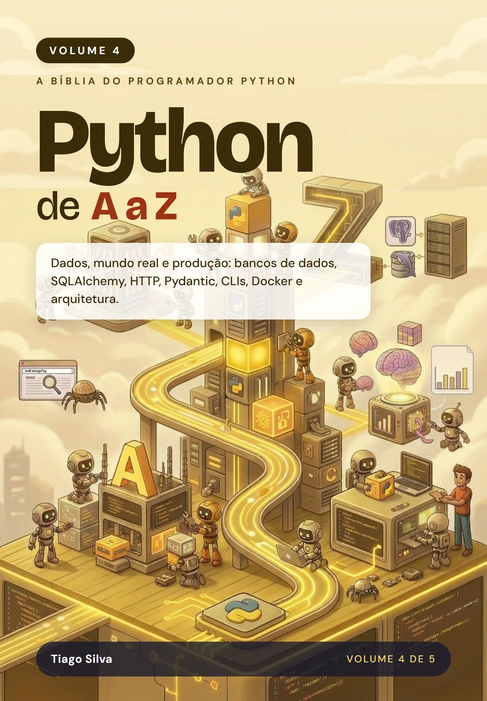

Python de A a Z: Dados, mundo real e produção
por Tiago Silva
Do banco de dados à produção: persistência, Python no mundo real e tudo o que leva o código para o ar, com números medidos e o critério de quando usar cada ferramenta.
- Páginas
- 486
- Idioma
- Português
- Publicação
- 10/2026
- Versão do Python
- 3.15
- Formatos
- Impresso e e-book (ePub)
Sobre este livro
Do banco de dados à produção, com o Python do mundo real
Este é o volume em que o Python encontra o mundo real. Você aprende SQL do zero e persiste dados com SQLite, PostgreSQL, MySQL, MariaDB, Oracle e SQL Server, usa SQLAlchemy e Alembic e sabe quando Redis ou MongoDB fazem mais sentido. Depois consome APIs com clientes HTTP, valida dados com Pydantic, analisa dados com NumPy, Pandas e Polars, automatiza a web e constrói ferramentas de linha de comando.
Na terceira parte, o código vai para produção: observabilidade, Docker, arquitetura de projeto, filas, tarefas em segundo plano e pipelines de dados. Cada tecnologia vem com números medidos, as armadilhas que mais custam caro e o critério para decidir quando usá-la. Um apêndice reúne perguntas de entrevista técnica, com respostas.
É aqui que estão as tecnologias que as vagas pedem: bancos de dados, APIs, análise de dados, Docker e filas aparecem em grande parte das descrições de vagas de back-end, dados e automação. Com este volume você ganha o repertório para trabalhar com tudo isso e dá um grande passo para se tornar um especialista Python completo.
Por onde começar
Se você nunca programou, comece pelo Volume 1. Este volume pressupõe o Python do dia a dia dos Volumes 1 e 2 e, para a parte de produção, noções de testes e de concorrência do Volume 3. SQL é ensinado do zero, e os capítulos de bancos de dados (1 a 8) podem ser lidos sozinhos, só com Python básico. Cada capítulo traz uma ficha com os pré-requisitos exatos. Os cinco volumes formam a coleção completa, mas cada um se sustenta sozinho.
O que você vai aprender
- Persistir dados com SQLite, PostgreSQL, MySQL e MariaDB, Oracle e SQL Server
- Usar SQLAlchemy e Alembic, e saber quando escolher Redis ou MongoDB
- Modelar bancos relacionais e escrever SQL com boas práticas
- Consumir APIs com httpx e validar dados nas fronteiras com Pydantic
- Analisar dados com NumPy, Pandas e Polars e automatizar a web e a linha de comando
- Observar o sistema em produção e empacotá-lo com Docker
- Estruturar a arquitetura do projeto, filas, tarefas em segundo plano e pipelines de dados
- Preparar-se para entrevistas técnicas com 66 perguntas respondidas
Sumário
21 capítulos e 1 apêndice. Toque em um item para ver do que ele trata.
1SQLitep. 41
2PostgreSQLp. 57
3MySQL e MariaDBp. 73
4Bancos Corporativos: Oracle e SQL Serverp. 87
5SQLAlchemyp. 101
6Migrações com Alembicp. 119
7Redis e MongoDBp. 135
8Modelagem e Boas Práticas de SQLp. 153
9Clientes HTTP com httpxp. 177
10Validação de Dados com Pydanticp. 195
11NumPy: Cálculo Numérico em Velocidade de Cp. 211
12Pandas: Análise de Dados com Tabelasp. 235
13Polars: Tabelas Rápidas, Preguiçosas e Paralelasp. 259
14Automação Web: Scraping e Navegadorp. 279
15Ferramentas de Linha de Comandop. 299
16Observabilidadep. 323
17Contêineres e Dockerp. 345
18Arquitetura de Projetosp. 365
19Filas e Tarefas em Segundo Planop. 387
20Pipelines e Transformação de Dadosp. 411
21Conclusão: Do Código à Produçãop. 433
APerguntas de Entrevista Técnicap. 449
Avaliações
O que os leitores dizem
Texto da avaliação.